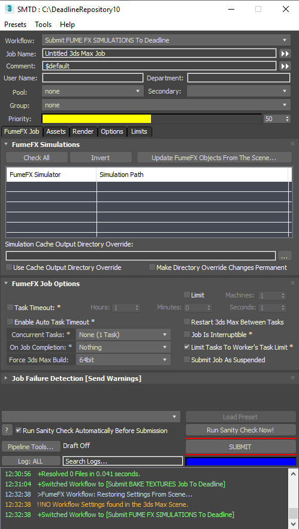

3ds Max - Integrated Submitter Workflow - FumeFX Simulation¶
FumeFX Simulation Workflow Overview¶
The FumeFX Simulation workflow lets you submit one or more FumeFX grids for simulation on Deadline.
Accessing The Workflow¶
This workflow will only be accessible in SMTD if the Sitni Sati FumeFX plugin has been installed on the workstation.
To use the workflow, select the Submit FUME FX SIMULATIONS To Deadline entry from the Workflow: drop-down list on top of the SMTD UI.
User Interface
The FumeFX Simulation workflow adds a FumeFX Job tab
It contains a custom FumeFX Simulations rollout
It features a custom FumeFX Job Options rollout with a reduced number of controls compared to the standard Job Options rollout.
It also features the standard Job Failure Detection rollout with no changes.
The standard Assets, Render, Options and Limits tabs will also be available with most of their default content.
The Render tab only features the relevant Scene Tweaks and 3ds Max Startup rollouts.
Submit Button Behavior
The SUBMIT button of SMTD will be disabled if
No FumeFX objects have been found in the scene
FumeFX objects have been found, but none of them has been checked in the list.
At least one of the FumeFX simulators has a path rooted at C:\ and the Use Cache Output Directory Override checkbox is unchecked.
Custom User Interface Controls¶
Check All button
Pressing this button will check all FumeFX simulators on the list.
Invert button
Pressing this button will check the unchecked and uncheck the checked FumeFX simulators on the list.
Update FumeFX Objects From The Scene… button
Pressing this button will refresh the content of the list.
FumeFX Simulator listView
Shows a list of all FumeFX simulators in the current scene.
Each object will have a corresponding checkbox to control whether it will be included in the submission or not.
A second colum shows the Simulation Path of each FumeFX simulator
Simulation Cache Output Directory Override text field and button
The text field provides an optional cache path override.
Press the […] button to the right of the field to open a directory browser.
You can also paste or type and enter a valid path directly into the text field.
Use Cache Output Directory Override
Default is unchecked.
When checked, and if the override path is valid, the simulation paths of all FumeFX simulators will be repathed to the override path folder.
This is useful when the original paths are pointing at a local storage not accessible to the Deadline Workers.
Make Directory Override Changes Permanent
Default is unchecked.
When checked, and only if Use Cache Output Directory Override is checked and a job is submitted, the simulation paths will not be restored after submission.
This would allow the current 3ds Max scene to access the simulation data from the location where Deadline will write it to.
Simulation Details¶
The 3ds Max scene will always be saved and submitted with the job, regardless of the relevant SMTD control.
Each Task in the FumeFX Simulation job will process one FumeFX simulator.
In other words, the number of Tasks will be equal to the number of FumeFX objects checked for submission on the list.
Workflow Script Files¶
This workflow consists of two script files:
SMTDWorkflow_FumeFX.ms - the workflow definition
MAXScriptJob_SimulateFumeFX.ms - the MAXScript Job file to be run by the Workers to perform the actual simulation.